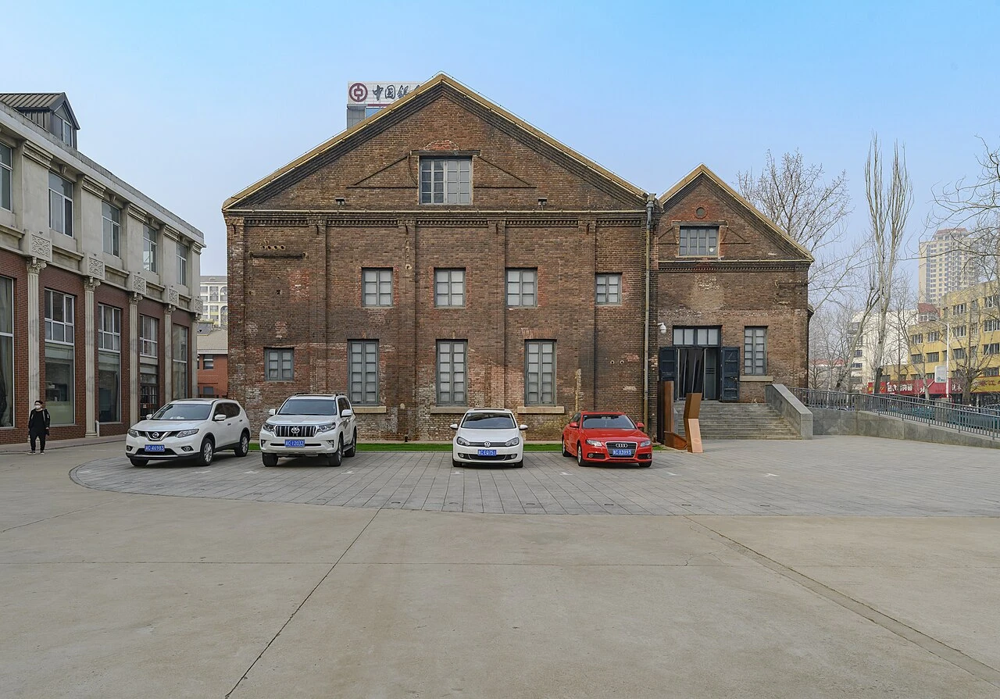

Glass Factory 玻璃工厂
Piano solo with audio visualization.
Watch on YouTubePoem excerpt
Glass Factory (Excerpt, Section I)
Ouyang Jianghe, 1987
Translation by W. Austin Woerner
The thing between seeing and seeing is glass. The separation not seen between face and face. But glass, as a thing, is not transparent. A glass factory is a massive eyeball, labor at its center, whose darkness is daylight glinting at the cores of things.
A thing persists in its initial tear. As a bird in pure light persists in its shadow. Gathers light into darkness, offers it back. Where glass is everywhere, glass is not itself but spirit. As air seems not to exist, where all is air.
玻璃工厂（节选·第一节）
欧阳江河，1987
从看见到看见，中间只有玻璃。 从脸到脸 隔开是看不见的。 在玻璃中，物质并不透明。 整个玻璃工厂是一只巨大的眼珠， 劳动是其中最黑的部分， 它的白天在事物的核心闪耀。
事物坚持了最初的泪水， 就象鸟在一片纯光中坚持了阴影。 以黑暗方式收回光芒，然后奉献。 在到处都是玻璃的地方， 玻璃已经不是它自己，而是 一种精神。 就像到处都是空气，空气近于不存在。
About the work
This composition was inspired by Ouyang Jianghe’s poem Glass Factory.
本曲受欧阳江河诗作《玻璃工厂》启发而创作。
From the poem
In a 2018 memoir, poet Yang Ke recalled sharing a room with Ouyang Jianghe during the 1987 Youth Poetry Gathering. After a visit to Yaohua Glass Factory, Ouyang stayed up late writing what became Glass Factory. Yang Ke, 2018
Ouyang later described Glass Factory as part of his 1980s exploration of physical places and conceptual spaces, and of the relationship between words and things. Poet interview, 2021
诗人杨克在2018年的回忆文章中记述，1987年参加青春诗会期间，他与欧阳江河同住一室。参观耀华玻璃厂之后，欧阳江河熬夜写成了《玻璃工厂》。 Yang Ke, 2018
欧阳江河后来谈到，《玻璃工厂》属于他在20世纪80年代对物理场所与概念空间，以及词与物之间关系的探索。 Poet interview, 2021

Former Yaohua Glass Factory site, now the Qinhuangdao Glass Museum, photographed in 2023.
Photo: ScareCriterion12 / Wikimedia Commons, CC BY-SA 4.0. Display cropped at bottom. Resized and converted to WebP.
Poet and translator

Ouyang Jianghe at Fangsuo, Beijing, 1 December 2025.
Photo: Huangchinhai / Wikimedia Commons, CC BY-SA 4.0. Resized and converted to WebP.
Ouyang Jianghe
Ouyang Jianghe (b. 1956, Luzhou, Sichuan) is a contemporary Chinese poet, literary critic, and professor at Beijing Normal University. A prominent figure in China's avant-garde poetry movement since the 1980s, his major works include The Suspended Coffin, Glass Factory, and Phoenix. His works have been translated into more than ten languages.
欧阳江河，1956年生于四川泸州，中国当代诗人、诗学批评家，北京师范大学特聘教授。他是20世纪80年代以来中国先锋诗歌的重要代表人物，代表作包括《悬棺》《玻璃工厂》《凤凰》等，作品被译为十余种语言。
Austin Woerner.
Portrait from University of Leeds staff profile. Resized and converted to WebP.
Austin Woerner
Austin Woerner is a Chinese–English literary translator whose translations include Ouyang Jianghe’s Doubled Shadows and Phoenix. University of Leeds
In a joint Kenyon Review interview, poet and translator described discussing syntax and the music of language, using classical music as a shared point of reference. Kenyon Review interview
Austin Woerner是一位中英文学译者，译作包括欧阳江河的 Doubled Shadows 和 Phoenix。 University of Leeds
在 Kenyon Review 的联合访谈中，诗人与译者谈到，他们会讨论句法和语言的音乐性，并以古典音乐作为共同参照。 Kenyon Review interview